This library collects and sorts various Chinese intangible cultural heritage resources, including traditional handicrafts, ancient arts, cultural stories and heritage skills. Our intelligent interactive robot can tell you the history, stories and cultural connotation behind every heritage item.
非遗文脉库系统收录、整理了中国各类国家级、省级非物质文化遗产相关资源，涵盖传统刺绣、传统织造、传统技艺、民俗纹样、非遗故事等多元内容。依托我们可对话的实物智能机器人，用户可以沉浸式、交互式地了解每一项非遗背后的千年历史、匠人故事与深厚文化底蕴，打造可触碰、可交流、可传承的数字非遗文化宝库。
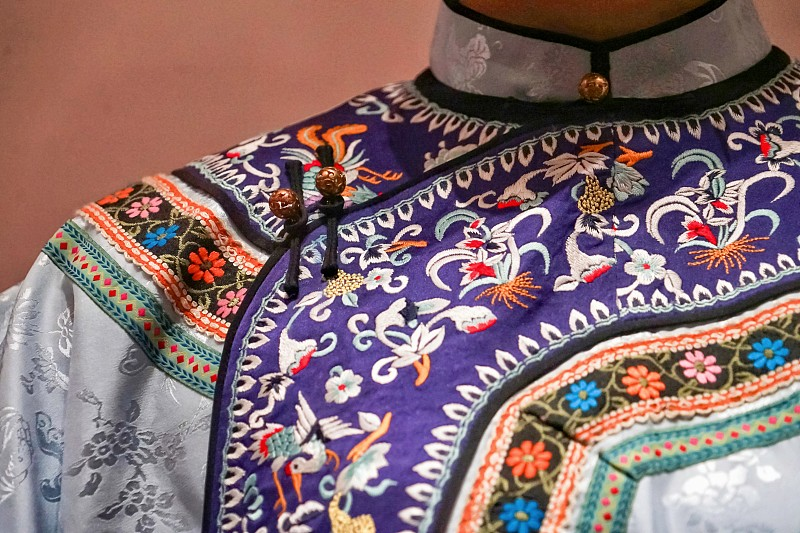
Su, Xiang, Yue and Shu Embroidery, thousands of years needle art
刺绣是中华经典手工非遗，包含苏绣、湘绣、粤绣、蜀绣四大名绣。历经千年发展，针法繁复精巧，纹样蕴含吉祥寓意，融合地域特色与匠人巧思，是东方服饰美学与手工技艺的经典代表。
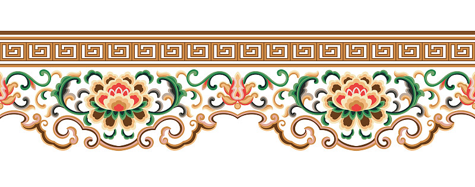
Traditional auspicious patterns and ancient Chinese design
传统祥瑞纹样贯穿千年华夏文明，龙凤、花鸟、云纹、回纹等纹样承载古人审美与精神寄托。每种纹样都有专属文化寓意，广泛应用于服饰、器物、建筑，是中式美学的核心符号。
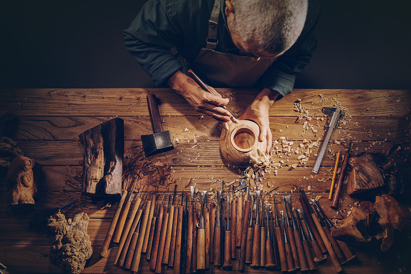
Legends and stories of intangible heritage inheritors
每一项非遗的延续都离不开传承人的坚守与付出。老一辈匠人深耕行业数十年，坚守古法技艺、拒绝机械化简化，以一生守护一门手艺，用匠心延续中华传统文化根脉。
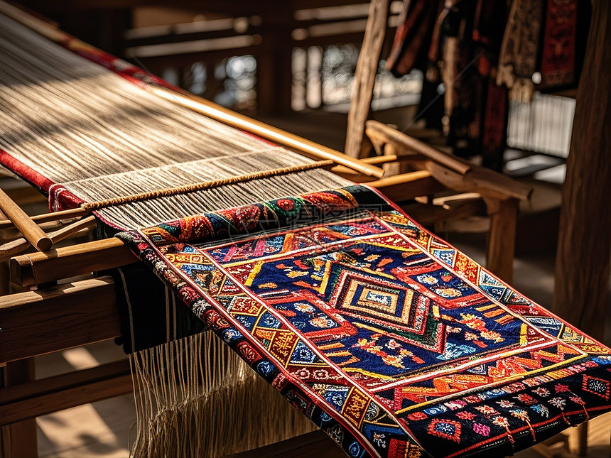
Traditional Weaving Techniques
传统织造是非物质文化遗产重要门类，以云锦、宋锦、蜀锦为代表，工艺流程复杂严谨，依靠纯手工上机织造。面料质感典雅华贵，见证古代纺织工艺的高超水准与商贸文明发展。
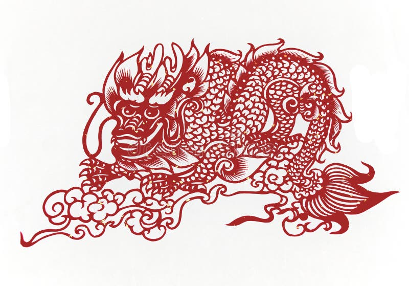
Intangible Cultural Heritage Paper-cutting
剪纸是流传最广的民间非遗艺术，以剪刀、刻刀为工具，在红纸之上雕琢花鸟、民俗、节庆纹样。风格质朴生动，贴近民间生活，常用于节庆装饰与民俗礼仪，承载浓郁乡土文化。
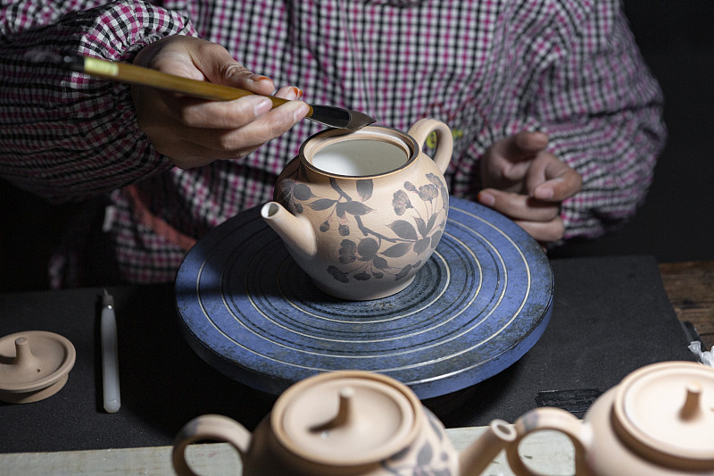
Traditional Pottery Art
中华陶艺历史源远流长，紫砂、青瓷、白瓷、黑陶等各有特色。依托手工拉坯、雕刻、上釉、古法烧制等传统工序，兼具实用价值与艺术价值，是中式生活美学的重要载体。
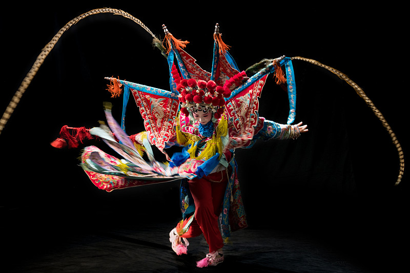
Traditional Opera Culture
戏曲是综合性传统非遗艺术，涵盖京剧、昆曲、越剧、黄梅戏等剧种。融合唱腔、身段、脸谱、服饰与传统配乐，演绎历史典故与民间故事，是中华传统文艺的集大成之作。
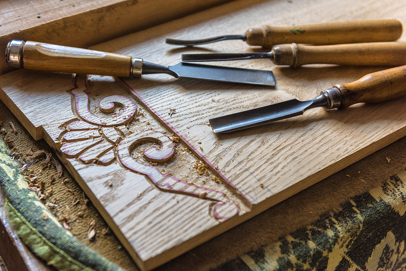
Traditional Wood Carving
传统木雕以天然木材为原料，东阳木雕、黄杨木雕、徽州木雕各具流派特色。匠人以刀代笔，雕琢山水、瑞兽、花鸟纹样，工艺精细繁复，广泛应用于古建筑、家具与工艺摆件。
Folk Customs and Etiquette
民俗礼仪非遗包含传统节日、婚嫁习俗、祭祀礼仪、节气活动等内容，是地域文化与族群精神的集中体现。世代口传身授，维系文化认同，彰显华夏礼仪之邦的深厚底蕴。
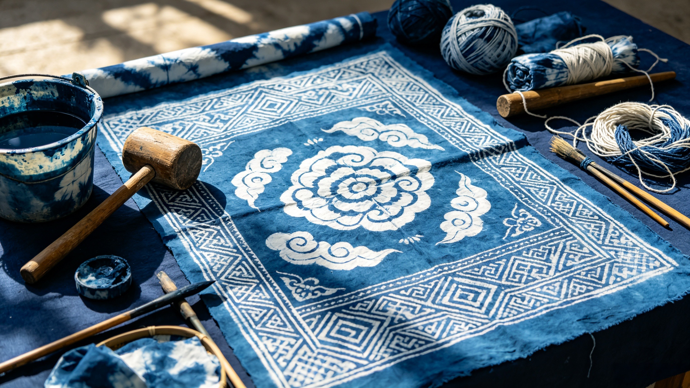
Traditional Tie-dye Craft
扎染与蜡染是少数民族特色非遗手工技艺，依靠捆绑、浸染、固色等古法流程制作。色彩晕染自然独特，纹样随性灵动，承载民族文化记忆，如今广泛应用于文创与服饰设计。
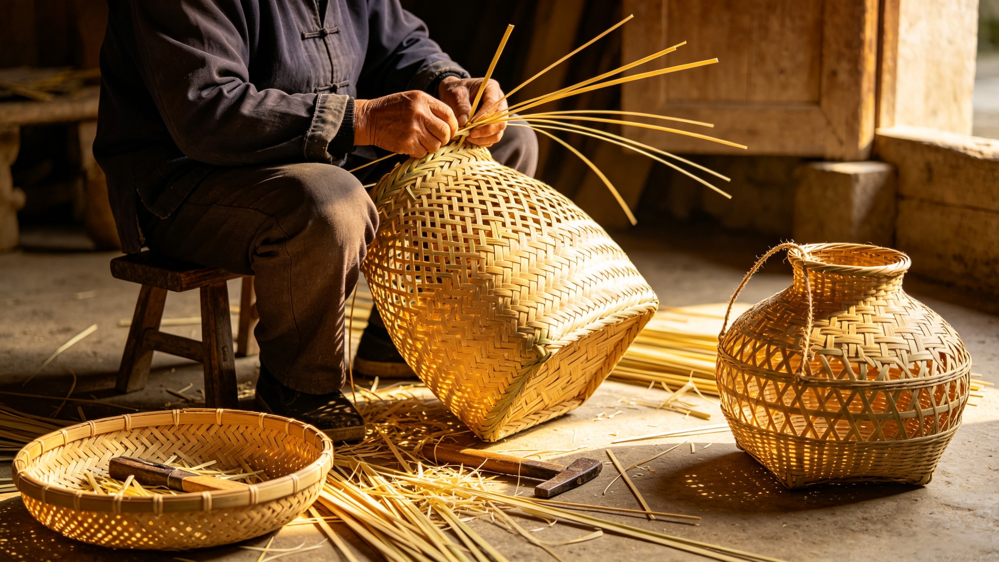
Bamboo Weaving Art
竹编是古老的民生类非遗，选取天然竹材劈丝编织，制作收纳器具、工艺品、生活用品。工艺柔韧精巧，低碳自然，兼具实用性与观赏性，体现古人就地取材的生活智慧。
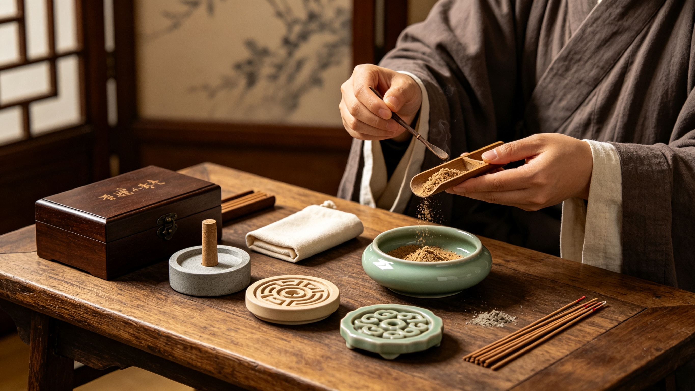
Ancient Incense Culture
传统合香、制香技艺属于珍贵非遗，融合草本、花木、香料古法调配制作。香道文化贯穿礼仪、养生、修身等场景，意境雅致悠远，是中式古典生活与传统文化的重要组成部分。
你可以向我咨询任何非遗文化、技艺、历史、民俗问题，我会为你专业解答！
Nowadays, many traditional Chinese intangible cultural heritage are facing inheritance dilemma and insufficient youth attention. It is urgent to use modern technology to inherit traditional culture.
当前，大量中华传统非物质文化遗产面临传承断层、年轻群体认知度低、传播形式老旧等困境，古老非遗与当代年轻受众之间存在距离鸿沟。本大创项目应运而生，希望用科技创新为非遗注入全新生命力。
Taking technology as the carrier and intangible heritage as the core, we integrate interactive robots with traditional culture to build a new cultural communication platform.
项目以“科技为载体，非遗为内核，对话传文脉”为核心理念，将可交互实物机器人与非遗纹样、非遗技艺深度融合，打造能主动讲解、流畅对话、沉浸式科普的智能非遗传播新载体。
Break the cognitive barrier of intangible heritage, innovate inheritance methods, and promote the creative transformation and innovative development of excellent traditional culture.
打破非遗高冷刻板印象，降低非遗文化的认知门槛；创新非遗活态传承路径，让千年文脉可触、可感、可对话；助力中华优秀传统文化在新时代实现创造性转化与创新性发展。
Our project team is composed of cross-major college students, with professional guidance from excellent instructor. Every member takes clear division of work, full of passion for intangible cultural heritage inheritance.
本大创团队由不同专业方向的在校大学生组成，配备专业指导老师，团队成员分工明确、各司其职，怀揣非遗传承热忱，合力推进项目落地与优化创新。
统筹整体项目、方案设计
机器人功能、交互逻辑开发
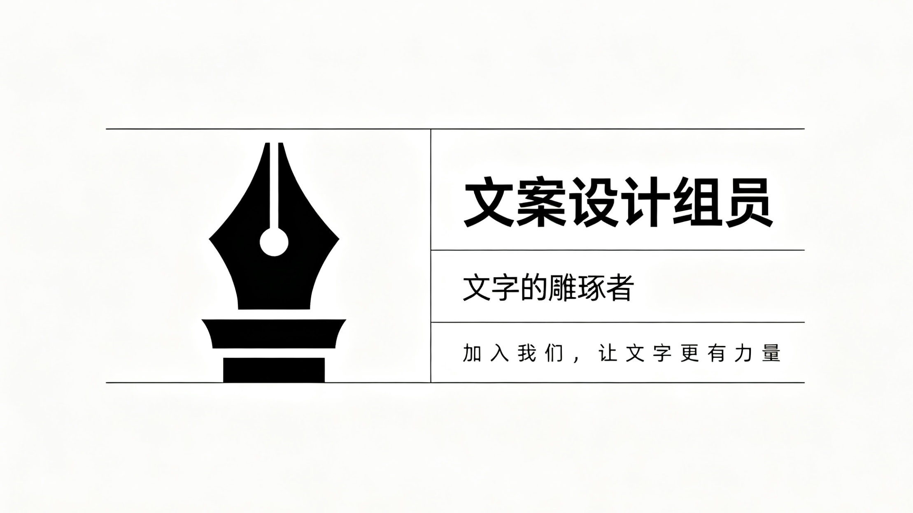
非遗资料整理、视觉页面设计
成果推广、对外展示与记录
项目全程专业学术指导
If you are interested in our project, welcome to contact us for communication, cooperation and experience exchange.
若你对本“星语传薪”非遗机器人项目感兴趣，欢迎留言咨询、交流合作、体验交流。
地址：沈阳大学大创项目研发工作室
电话：14738297548
邮箱: xingyuchuanxin@heritage.com
> 如何预约机器人线下体验？
> 项目合作与学术交流咨询
> 非遗资源补充与内容完善